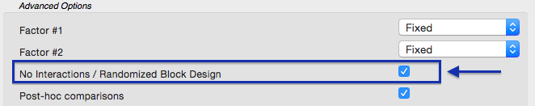
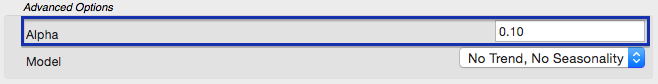
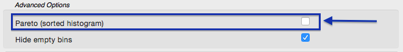
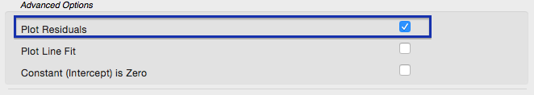
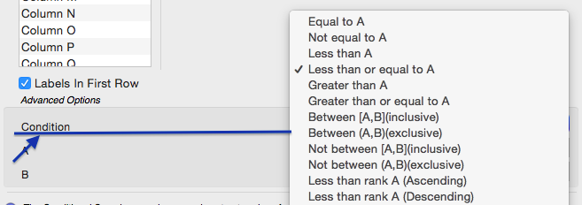
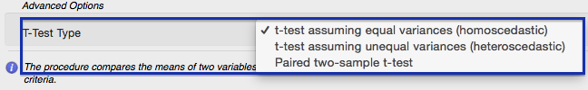

Migration Guide from ATP
In this chapter, we discuss differences between the analysis procedures and the Analysis Toolpack (ATP) ones. Please use the left sidebar to get more details on each command. Feel free to contact us if you have any questions.ATP and StatPlus Features Matrix
| Analysis Toolpak Command (click to see details) | StatPlus Command |
| ANOVA - Single Factor | Analysis of Variance (ANOVA) → One-way ANOVA |
| ANOVA - Two-Factor With Replication | Analysis of Variance (ANOVA) → Two-way ANOVA |
| ANOVA - Two-Factor Without Replication | Analysis of Variance (ANOVA) → Two-way ANOVA |
| Correlation | Basic Statistics → Linear Correlation (Pearson) |
| Covariance | Basic Statistics → Covariance |
| Descriptive Statistics | Basic Statistics → Descriptive Statistics |
| Exponential Smoothing | Time Series → Exponential Smoothing |
| F-Test Two-Sample For Variances | Basic Statistics → F-Test For Variances |
| Fourier Analysis | Time Series → Fast Fourier Transform - Direct |
| Histogram | Basic Statistics → Histogram |
| Moving Average | Time Series → Moving Average |
| Random Number Generation | [Data] → Random Numbers Generation |
| Rank and Percentile | Nonparametric Statistics → Rank and Percentile |
| Regression | Regression → Linear Regression |
| Sampling | [Data] → Random Sample [Data] → Conditional Sample [Data] → Periodic Sample |
| t-Test: Paired Two Sample for Means | Basic Statistics → Compare Means (T-Test) |
| t-Test: Two-Sample Assuming Equal Variances | Basic Statistics → Compare Means (T-Test) |
| t-Test: Two-Sample Assuming Unequal Variances | Basic Statistics → Compare Means (T-Test) |
| z-Test: Two Sample for Means | Basic Statistics → Two-Sample z-Test for Means |
Details
ANOVA - Single Factor
Run the Analysis of Variance (ANOVA) → One-way ANOVA command from the Statistics menu.
ANOVA - Two-Factor With Replication
Like many statistical packages StatPlus uses the following data layout for the two-way ANOVA: two factor variables and one response variable. If your data is arranged in a table - please use the Stack columns command to prepare data for the analysis.
Run the Analysis of Variance (ANOVA) → Two-way ANOVA command from the Statistics menu.
ANOVA - Two-Factor Without Replication
Run the
Analysis of Variance (ANOVA) → Two-way ANOVA command from the Statistics menu.
Under the Options check the No Interaction(s) option.

Correlation
Run the Basic Statistics → Linear Correlation (Pearson) command from the Statistics menu.
Matrix with correlation coefficients, critical values and p-values for each pair of variables is produced.
Covariance
Run the Basic Statistics → Covariance command from the Statistics menu.
Descriptive Statistics
Run the Basic Statistics → Descriptive Statistics command from the Statistics menu.
Exponential Smoothing
Run the Time Series → Exponential Smoothing command from the Statistics menu.
To change the Damping factor please use the Alpha option.

Then select a variable with time series and click OK.
F-Test Two-Sample For Variances
Run the Basic Statistics → F-Test For Variances command from the Statistics menu. One-sided p-levels for H1: F > 1 (Analysis Toolpak) and H1: F < 1, and two-sided p-level for H1: F ≠ 1 are calculated.
Fourier Analysis
Run the Time Series → Fast Fourier Transform - Direct command from the Statistics menu. Select variables with real (Re) and imaginary (Im) parts of the time series and click the OK button. Variable with an imaginary part is optional. If the variable with an imaginary part is not specified it is considered to be identically zero.
If you need to do inverse transformation - run the Time Series → Fast Fourier Transform - Inverse command from the Statistics menu.
Histogram
Run the
Basic Statistics → Histogram command from the Statistics menu.
A histogram is plotted for each input variable. To get a Pareto histogram please use the Pareto histogram option in the Options. You can also select between right-closed intervals (Excel) or left-closed (right-open) intervals.

Moving Average
Run the Time Series → Moving Average command from the Statistics menu. Select a variable with time series and click the OK button.
Random Number Generation
Open the Random Numbers Generation menu from the Data menu. Select the distribution from the popup menu. Parameters for each procedure are similar to those in the Analysis Toolpak (ATP).
Rank and Percentile
Run the Nonparametric Statistics → Rank and Percentile command from the Statistics menu.
Regression
Run the
Regression → Linear Regression command from the Statistics menu.
To add the residuals plot to the report please use the Plot Residuals option in the Options. You can also choose to get a collinearity diagnostics report, run heteroscedasticity tests and normality tests for residuals. Available residuals for plots are regular residuals (raw), standardized residuals, studentized residuals and deleted residuals (externally studentized residuals).

Sampling
All of the sampling methods are located under the Data menu.
Run a command ( Random Sample, Conditional
Sample or Periodic Sample) from the Data menu, select variables for sampling and click the OK button.
Parameters for each procedure are similar to those in the Analysis Toolpak (ATP).
To change the condition for the Conditional Sample command, please use the Condition option.

t-Test: Paired Two-Sample for Means, Two-Sample Assuming Equal Variances, Two-Sample Assuming Unequal Variances
Run the Basic Statistics → Compare Means (T-Test) command from the Statistics menu.
To change the t-test type use the T-Test Type combo box in the Options.
To compare two samples using summarized data use the Compare Means (use summarized data) command.

z-Test: Two-Sample for Means
Run the Basic Statistics → Two-Sample z-Test for Means command from the Statistics menu.
One-sample z-Test is also available.